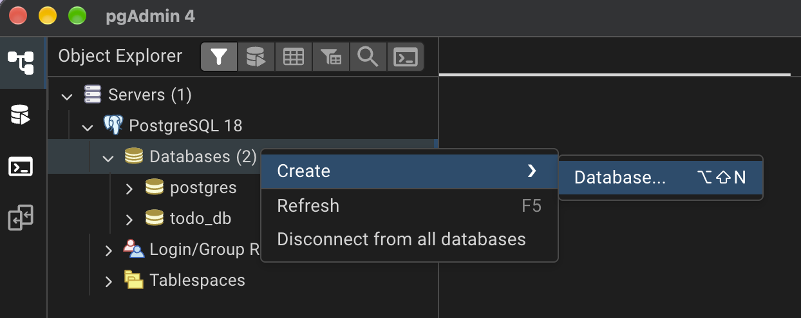
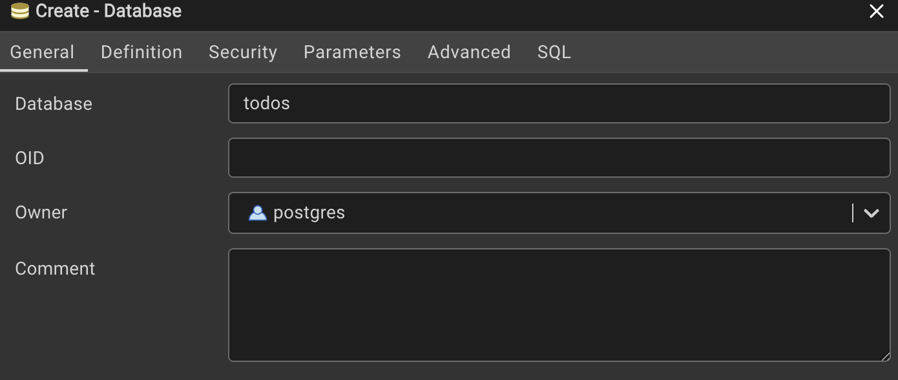
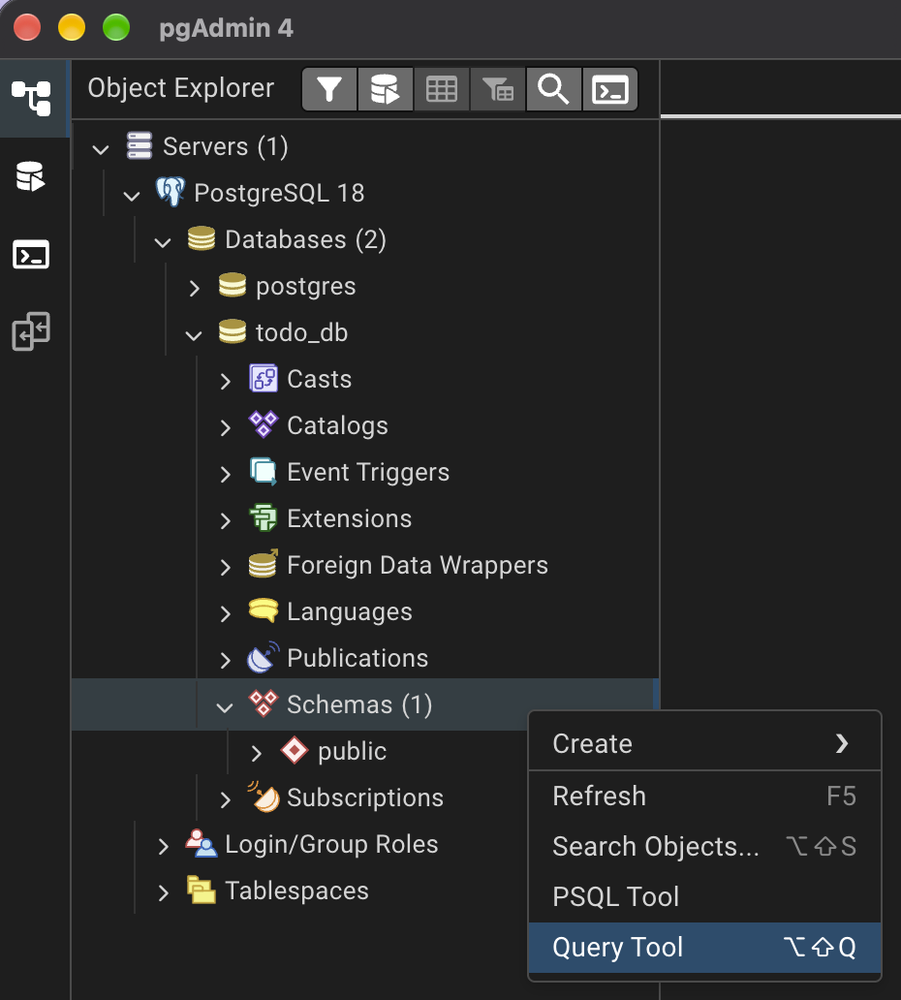
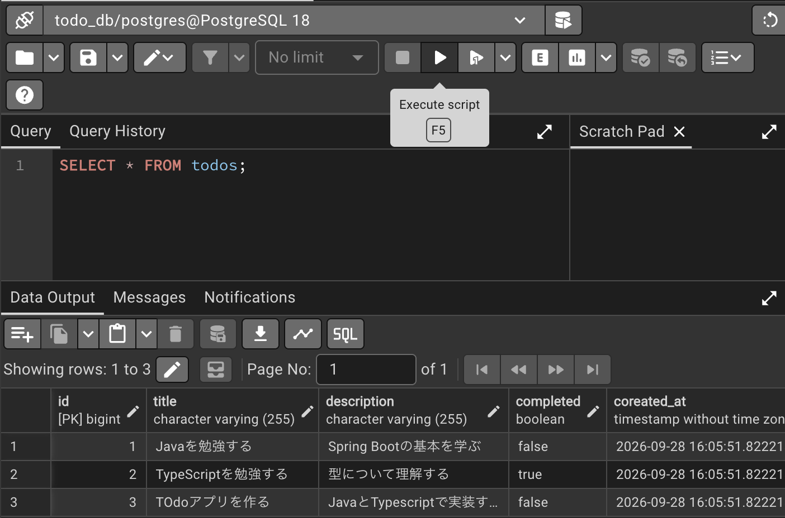

DBパスの環境変数の設定とDB作成
posgleSQLのコマンド(psql)がターミナルから使えなかったので、Macの環境変数へ設定する。
1. コマンド[which psql]でファイル確認。「psql not found」と表示された 2. コマンド[find /opt/homebrew /usr/local -name psql 2>/dev/null]を実行すると 「/opt/homebrew/Cellar/libpq/17.4/bin/psql」と表示された -> psql自体は入っていて、上記のアドレスに存在してるけどPATHに登録されてないことが判明 ※コマンドの意味：find 探す場所 条件 -> 探す場所「/opt/homebrew /usr/local」条件「-name psql」 2>/dev/null -> 不要なエラー(2)はゴミ箱(/dev/null)に捨てて、画面に表示しない 3. 試しにPATHを通す。コマンド[export PATH="/opt/homebrew/Cellar/libpq/17.4/bin:$PATH"]実行 4. コマンド[psql --version]で確認。「psql (PostgreSQL) 17.4」と表示され、psqlが使用できることを確認 5. 恒久的にPATHを設定する コマンド[echo 'export PATH="/opt/homebrew/Cellar/libpq/17.4/bin:$PATH"' >> ~/.zshrc source ~/.zshrc] 6. コマンド[psql --version]で確認。
1.Server > PostgreSQL を右クリック。Create > Databaseをクリック。

2. DBの設定項目が表示されるので、Database項目にDB名を入力しSaveをクリック。 "OID"はObject Identifierで、PostgreSQL内部でデータベースなどのオブジェクトを識別するための番号。 通常はPostgreSQL側が自動的に管理するので、自分で入力する必要はない。

3. todo_DBを右クリック。Query Toolを選択。右側にSQLを書く画面が開く。

テーブル作成のSQLを入力し、[実行▶︎]する。 ※「id BIGINT GENERATED ALWAYS AS IDENTITY PRIMARY KEY」の意味 id: カラム名 BIGINT: データ型 GENERATED ALWAYS AS IDENTITY: DBが自動採番 PRIMARY KEY: この列を主キーにする ちなみにBIGINTかつGENERATED ALWAYS AS IDENTITYはまとめてBIGSERIALで設定もできる。 「id BIGSERIAL PRIMARY KEY」も同じ意味になる
CREATE TABLE todos (
id BIGINT GENERATED ALWAYS AS IDENTITY PRIMARY KEY,
title VARCHAR(100) NOT NULL,
description TEXT,
completed BOOLEAN NOT NULL DEFAULT FALSE,
created_at TIMESTAMP NOT NULL DEFAULT CURRENT_TIMESTAMP,
updated_at TIMESTAMP NOT NULL DEFAULT CURRENT_TIMESTAMP
);
4. SQLを書いたら右上の▶︎で実行。 SELECT文などは下に実行内容が表示される。
